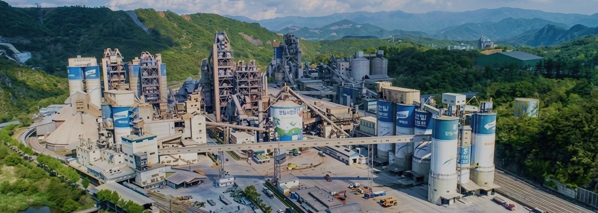

고객지원
고객지원
> 고객지원 > 단양공장견학
Factory Tour단양공장견학
친환경적인 단양공장의 생생한 체험학습, 한일시멘트가 안내합니다
시멘트가 만들어지는 현장을 직접 눈으로 확인하는단양공장견학
소성부터 관제까지 전 과정을 둘러봅니다.
-
견학 가능 기간
6월 ~ 11월 (7·8월 제외)
-
신청 기한희망일
2주 전까지
-
견학 방식
단체견학 원칙
-
시간대
오전 · 오후 중 선택

견학 코스, 이렇게 이어집니다
공장 본관에서 시작해 소성·저장 설비를 거쳐 관제실까지, 실제 견학 순서 그대로 안내합니다.
-
- 실내 브리핑
- 소회의실 영상 시청 후 3층 역사관에서 설명을 듣습니다.
-
- 우덕원 · 자재창고
- 차량 이동 중 공원 우덕원을 지나 자재창고를 견학합니다.
-
- 사이로 · 시멘트 밀
- 시멘트·크링카 사이로와 시멘트 밀을 견학합니다.
-
- 석고치장 · 6호 킬른
- 신설 석고치장을 지나 6호 킬른을 견학합니다.
-
- COP 관제실
- 공장 전체 가동을 제어하는 COP 견학으로 마무리됩니다.
견학 신청 안내
-
- 2주
- 신청 기한을 지켜주세요
- 공장견학은 희망 견학일 2주일 전까지 신청해야합니다. 담당자가 견학일정과 공장여건을 검토한 뒤 가능 여부를 안내합니다.
-
- 단체
- 단체견학이 원칙입니다
- 공장견학은 단체견학을 원칙으로 하며, 견학 담당자와 일정 등이 합의된 경우에만 견학이 가능합니다. 연락처를 정확히 기재해 주세요.
-
- 6~11월
- 견학 가능 시기가 정해져 있습니다
- 견학은 6월부터 11월까지 가능하며, 7·8월은 설비 보수 관계로 견학이 중단됩니다. 신청 시 오전·오후 시간대를 선택할 수 있습니다.
단양공장 생산관리팀
충북 단양군 매포읍 매포길 245
043-420-5611
Fax. 043-420-5615